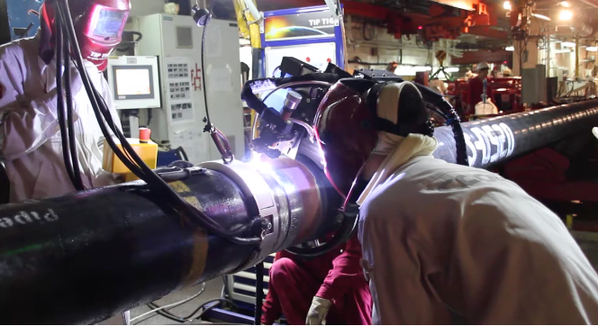
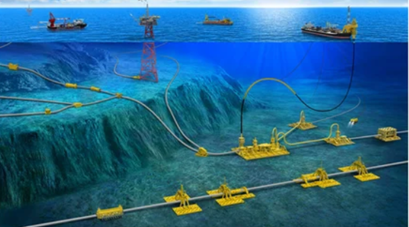

SteelTrace is a Dutch technology company established in 2017, with headquarters in the Netherlands and a presence in Houston, Texas. Our multidisciplinary team combines expertise in software engineering, metallurgy, quality assurance, cybersecurity, and industrial operations to solve one of the biggest challenges facing safety-critical industries: trusted manufacturing and quality data.
SteelTrace is the standard for Smart Manufacturing Records (SMRs) in safety-critical industries. Our cloud-based Software-as-a-Service (SaaS) platform replaces paper- and PDF-based quality, compliance, and traceability processes with smart, data-native workflows secured by blockchain technology.
The SteelTrace platform connects operators, EPCs, manufacturers, laboratories, inspection companies, stockists, and other supply chain participants in a single digital ecosystem. By capturing, validating, and verifying data at its source, SteelTrace creates a trusted and structured data foundation that enables real-time compliance, end-to-end traceability, and immutable auditability across complex supply chains.
Unlike traditional quality management systems or document repositories, SteelTrace embeds requirements and verification rules directly into the workflow. This enables organizations to move from compliance-by-audit to compliance-by-design, automatically validating manufacturing and inspection data against project specifications, quality plans, and regulatory requirements as work is performed.

SteelTrace supports the complete asset lifecycle from raw material and manufacturing through construction, operation, maintenance, and decommissioning, providing cradle-to-grave traceability and a trusted foundation for Digital Twins, predictive analytics, AI initiatives, and asset integrity management.
Today, SteelTrace primarily serves the Energy sector, including oil and gas, LNG, carbon capture, hydrogen, and other energy infrastructure projects, while its Smart Manufacturing Record approach is equally applicable to Aerospace, Defense, Medical devices, and other highly regulated industries.

By transforming manufacturing and quality data into a structured, searchable, and trusted asset, SteelTrace helps organizations reduce risk, improve efficiency, accelerate project execution, strengthen regulatory compliance, and make data the cornerstone of decision-making.